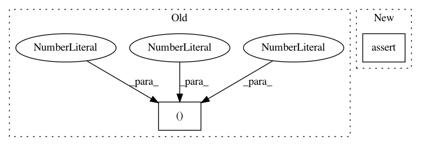

a5103909bb43f6e9d655587949b54cbd95abbb18,tests/keras/layers/recurrent_test.py,,test_regularizer,#Any#,158
Before Change
bias_regularizer="l2")
layer.build((None, None, 2))
assert len(layer.losses) == 3
layer(K.variable(np.ones((2, 3, 2))))
assert len(layer.losses) == 4
After Change
x = K.variable(np.ones((num_samples, timesteps, embedding_dim)))
layer(x)
assert len(layer.cell.get_losses_for(x)) == 0
assert len(layer.get_losses_for(x)) == 1
@keras_test
def test_masking_layer():
In pattern: SUPERPATTERN
Frequency: 10
Non-data size: 2
Instances
Project Name: keras-team/keras
Commit Name: a5103909bb43f6e9d655587949b54cbd95abbb18
Time: 2017-09-21
Author: francois.chollet@gmail.com
File Name: tests/keras/layers/recurrent_test.py
Class Name:
Method Name: test_regularizer
Project Name: NifTK/NiftyNet
Commit Name: adf0fc53d9f7a7aae735c23c63cf54114b2add21
Time: 2018-04-05
Author: wenqi.li@ucl.ac.uk
File Name: tests/sampler_weighted_test.py
Class Name: WeightedCoordinatesTest
Method Name: test_3d_coordinates
Project Name: keras-team/keras
Commit Name: ace7b7fe7f34ae02df078f0a92b4b37be7bc3ff9
Time: 2016-01-20
Author: farizrahman4u@gmail.com
File Name: keras/backend/theano_backend.py
Class Name:
Method Name: rnn
Project Name: catalyst-team/catalyst
Commit Name: 1ef3ad90a3423ed15ca41e0ea4e81012ebe84a9f
Time: 2020-08-11
Author: scitator@gmail.com
File Name: catalyst/data/scripts/project_embeddings.py
Class Name:
Method Name: main
Project Name: NifTK/NiftyNet
Commit Name: 757024bccb9468a6afd8c365b249699fbe518acd
Time: 2018-04-05
Author: wenqi.li@ucl.ac.uk
File Name: tests/sampler_balanced_test.py
Class Name: BalancedCoordinatesTest
Method Name: test_3d_coordinates
Project Name: keras-team/keras
Commit Name: ace7b7fe7f34ae02df078f0a92b4b37be7bc3ff9
Time: 2016-01-20
Author: farizrahman4u@gmail.com
File Name: keras/backend/tensorflow_backend.py
Class Name:
Method Name: rnn
Project Name: keras-team/autokeras
Commit Name: 736ba6c6873290fdae110395040f76ba7ab0ff19
Time: 2017-12-17
Author: wangtaoo665@gmail.com
File Name: tests/test_net_transformer.py
Class Name:
Method Name: test_net_transformer
Project Name: NifTK/NiftyNet
Commit Name: 757024bccb9468a6afd8c365b249699fbe518acd
Time: 2018-04-05
Author: wenqi.li@ucl.ac.uk
File Name: tests/sampler_balanced_test.py
Class Name: BalancedCoordinatesTest
Method Name: test_2d_coordinates
Project Name: NifTK/NiftyNet
Commit Name: adf0fc53d9f7a7aae735c23c63cf54114b2add21
Time: 2018-04-05
Author: wenqi.li@ucl.ac.uk
File Name: tests/sampler_weighted_test.py
Class Name: WeightedCoordinatesTest
Method Name: test_2d_coordinates
Project Name: NifTK/NiftyNet
Commit Name: b68ca4d6b22f2efd73581b9843d5ac2aeffcb6f7
Time: 2018-09-13
Author: wenqi.li@ucl.ac.uk
File Name: niftynet/engine/windows_aggregator_base.py
Class Name: ImageWindowsAggregator
Method Name: crop_batch